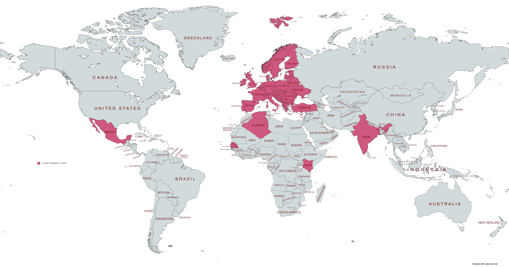
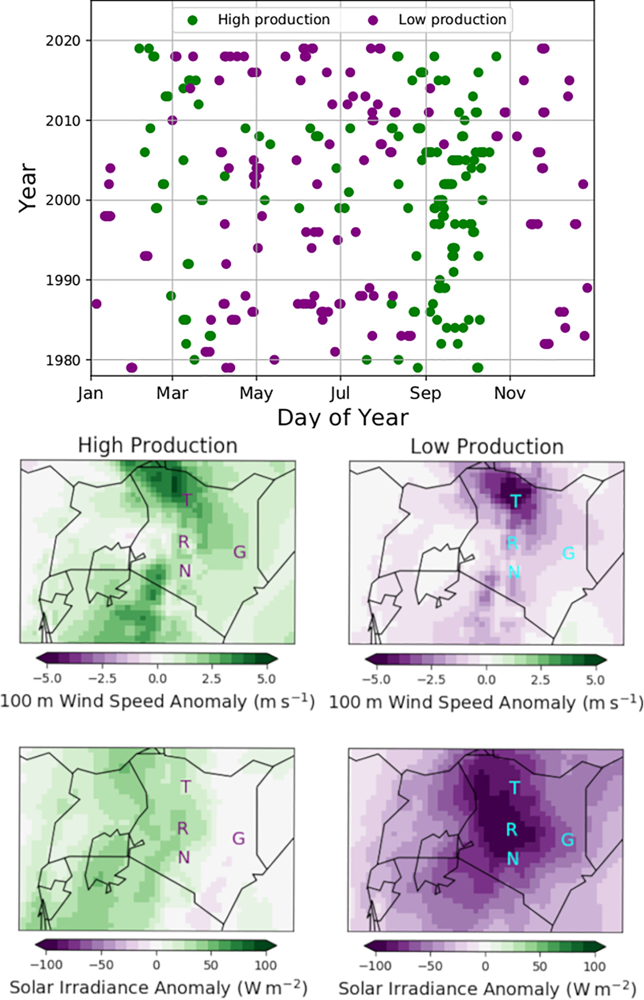

I have a keen interest in developing energy-meteorology projects over developing regions. Areas of the world i've worked on to date are shown in the map below but i'm always keen to develop new collaborations. Some examples of these are linked below including:
- Wind and solar power resource assessment.
- Quantifying meteorological drivers of energy system behaviour from daily to inter-annual timescales.
- Understanding potential risks from extreme weather events.
See the links below for some recent student projects which we've developed into publications. Scroll down for some recent project abstracts, and see the publications page for full information. Please get in touch if you would like more information about any of these projects!
Africa Mexico Characterizing the variability and meteorological drivers of wind power and solar power generation over Africa
Sub-Saharan Africa (SSA) has the lowest energy access rates in the world, which poses a key barrier to power system development. Deployment of renewables, including wind and solar power, will play a key role in expanding electricity supply across SSA: distributed generation (enabling access for remote communities), cost-effectiveness and low emissions are key advantages. However, renewable generation is weather dependent; therefore, including more renewables increases the amount of meteorologically driven variability in the power system. Two countries in SSA are chosen for detailed investigation of this meteorologically driven variability: Senegal in West Africa and Kenya in East Africa. These are chosen due to being areas of dense population, where there is operational wind and solar power, and plans for regional expansion. In Senegal, solar generation is fairly consistent throughout the year, while wind generation exhibits strong seasonality, with a peak in the boreal spring. Low wind and solar power generation days during the boreal summer are found to be related to the passage of African Easterly Waves. Over Kenya, both wind and solar generation exhibit seasonal variability, with wind generation peaking during boreal autumn, and solar generation at a minimum during boreal summer. Inter-annual variability in generation is greater over Kenya than over Senegal; the El Nino Southern Oscillation is found to impact wind and solar generation over Kenya. El Nino phases are associated with lower wind and solar generation in October–December over Kenya, but higher generation in July–September. This improved understanding of variability will assist system planners in designing reliable future energy systems.
Top: Details of the high production (green; top 1%) and low production (purple; bottom 1%) of weighted wind and solar power generation in Kenya. Bottom: Wind speed and surface solar radiation anomalies during the high and low production events with letters marking four sites.
The impact of tropical cyclones on potential offshore wind farms
The climate crisis has led to an increased interest in renewable energy, and in wind energy in particular. Wind farms with the largest generating potential are generally located offshore. In this study we consider the case of Mexico, a sub-tropical country in North-America. Due to Mexico's location, offshore wind farms (OWF) would be at risk of damage from strong winds associated with tropical cyclones (TCs) in both the Pacific and the Gulf of Mexico basins. Thus, here we ask whether there are any regions in Mexico combining a high generating potential and a low risk from tropical cyclones. To answer this question, the ERA5 reanalysis has been used to identify two sites on the Pacific coast and two sites in the Gulf of Mexico with high wind power potential. Then, using the ERA5 reanalysis and TC best-track observational data, the potential effects of four major hurricanes and the climatological hazard posed by TC-related damaging winds on OWFs at those sites have been investigated. The return period for TCs with near-surface winds exceeding 50 m s−1, a threshold associated with increased structural damage likelihood, has been estimated at as low as 8 years for the Gulf of Mexico and above 64 years for Pacific coast. Therefore, in terms of the magnitude of the TC-related hazard, the Pacific coast sites are found to be preferred as locations for the development of OWFs. These results are relevant for any planning of offshore wind energy in Mexico, and the methodology applicable to any other sub-tropical region in which the risk of tropical cyclones is present.
- Pacific and Gulf of Mexico sites exhibit viable offshore wind power potential.
- Tropical-cyclone related hazard at those sites is estimated using reanalysis and observations.
- All sites would be at risk of cut-out winds during the passage of a tropical cyclone.
- Pacific offshore sites are the least susceptible to tropical cyclone damaging winds.
Example Wind speed footprints of hurricanes (a) Patricia, (b) Wilma, (c) Odile and (d) Gilbert, based on bias-corrected ERA5 100-m wind speed. The solid black line represents the cyclone track and the black dot size is proportional to the maximum vorticity. Shaded contours show the maximum 100-m wind speed reached during the hurricane. Coloured line contours represent the number of hours experienced above the turbine cut-out speed (25 m s−1) during the hurricane's life cycle.
Assessment of solar and wind energy complementarity in Algeria
The recent transition towards sustainable energy resources, aiming for the decarbonisation of the electrical power sector has gained global and regional importance. Therefore, there is a great need to create roadmaps to efficiently achieve this goal. In this regard, this paper evaluates the spatial and temporal complementarity between solar and wind energy in Algeria for different timescales. To this end, a grid with 0.5° x 0.5° spatial resolution that covers the Algerian territory is created and then representative datasets of wind speed and solar radiation were obtained for each point. The Spearman’s rank correlation coefficient is applied as an index to measure the relationship between the underlying resources. The results of this work indicate the existence of moderate complementarity on daily timescale in the coastal regions. The highest complementarity is observed in the province of Annaba, with a complementarity index equals −0.52. Whereas, the south of the country is characterized by synchronised solar and wind resources. Further analysis reveals that the assessment of complementarity based on power generation or resource potential leads almost to the same results. The relationship analysis shows good concordance with a determination coefficient of 0.98, which means that the components specifications have a low impact on the complementarity index. Additionally, dispersed wind systems show a promising smoothing effect, while less spatial complementarity is observed for solar-solar and solar-wind scenarios. The analysis performed in this paper provides informative guidelines for future investments in Algeria by identifying sites with the highest complementarity between solar and wind resources.
- First maps of solar and wind energy complementarity for Algeria.
- Temporal complementarity is assessed on multiple timescales.
- Diurnal cycle analysis for regions of Annaba and Tamanrasset is conducted.
- System component specifications have low impact on complementarity.